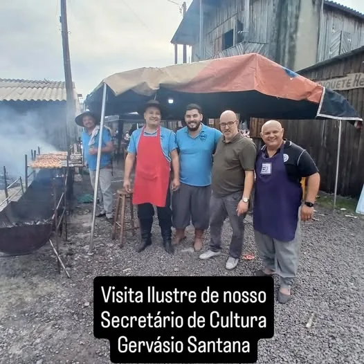
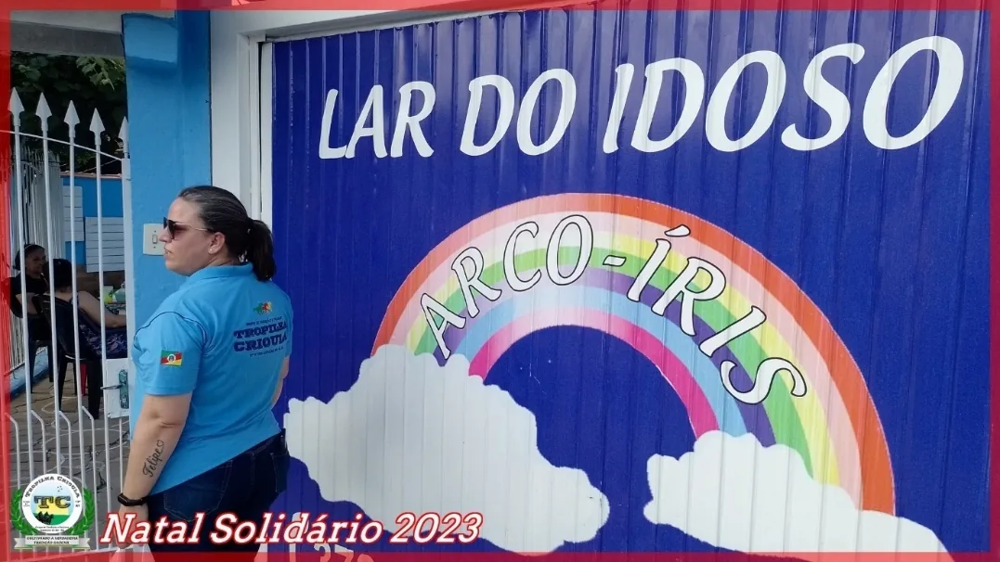

Nossos Departamentos
Depto. Social
Solidariedade o ano inteiro, com mais de 300 crianças e 100 idosos atendidos por ano.
Quem somos
Cultura gaúcha como gesto de cuidado
A defesa de direitos sociais é a atividade principal registrada da entidade. Por isso o Tropilha abraça escolas públicas, asilos, abrigos e qualquer instituição que precise de uma mão amiga.
O Depto. Social organiza as campanhas, mobiliza os voluntários e cuida da relação com as entidades apoiadas, como a ACAPASS, a Cruz Vermelha e o Lar Abrigo Meu Refúgio.
Ações
O que o Social faz
Galeto Solidário
Almoço comunitário de galeto, com renda revertida a entidades assistenciais. Em 2026 chegou à 11ª edição.
Tropilanche
Ação mensal de rua, desde abril de 2021: de 65 a 105 lanches e de 60 a 75 marmitas por edição, com o grupo União Solidária.
Natal Solidário
Visitas a idosos acolhidos no Lar Arco-Íris e em asilos do município, com música, dança e doações. Sete edições de 2017 a 2024.
Campanha do Cobertor
Cada R$ 25 doados viram um cobertor popular para quem enfrenta o frio.
Crianças e escolas
Oficinas de brinquedos na ACAPASS e visitas de escolas e escoteiros ao galpão.
Cheias de 2024
Arrecadação, marmitas e distribuição a famílias atingidas.


Participe
Fale com a gente
Informações, inscrições e voluntariado pelo WhatsApp (51) 98088-1334 ou pelo e-mail gtftropilhacrioula@gmail.com.